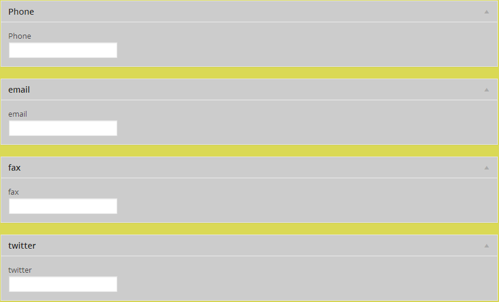

Stop Building Themes and Start Building Solutions:
Client-First Development:
The WordPress Front End Developer's Real Job
Who I am

- Dan Beil
- B.S. in Applied Sociology (2005)
- Front-end WordPress Developer at Blue Earth Interactive - St Paul, MN
- Freelanced for 4-ish Years prior to BEI
Why This Talk
- We are talking about custom WP theme builds
- Too often we see a disconnect between designers and developers
- This tends to lead to inconsistant and confusing UX
- Both are crucial to the creative process and should be involved from the beginning and throughout the project
$development = 'is the medium on which that story is told';
}
Client First UI/UX
- UI/UX is usually thought of concerning the frontend / end user
- Often the UI/UX of the client and content management is forgotten
- Suzette Frank of (mt) gave a great talk on 'Work Statements' / Business Requirements at WordCamp Boston 2013 - Back End UX should also be considered during this process.
What is a Front End Dev?
traditionally has expert knowledge in...- CSS3
- Javascript / jQuery
- Maybe other libraries as well
- HTML5 Awesomeness
- Understands page load time issues
- ...and how to complain about 200 milliseconds...talk with Josh Broton some time (@joshbroton)
Ok, So What's a Front End Wordpress Dev???
- Can (at the very minimum) have conversations about the previous items
- Very comfortble browsing the codex (or upcoming documentation)
- Some knowledge of server environments
- At the beginning Does not need to be an expert PHP dev
- At the beginning Or an expert Javascript dev
- Does need to be an 'expert' concerning WordPress
- i.e. Must know more than the client / site content manager
- AND KNOW HOW TO REGISTER / USE A CPT
Let's Make It Easy For Them!
- Dont use Theme Options if you dont need to
- Only use if absolutley necessary and keep it minimal
- The CPT allows us to symantically create and label POST TYPES
- With this the client can clearly see what content is entered where
- Even rediculously long CPT Labels CAN be a helpful.
Utilize stock WordPress functionality
- Meta Boxes (for media) - The media manager should be used rather than a simple text field.
The Prefect Example
- A List of Team Members or Employees
- Almost all organization have something similar
- Functionality can differ with the same information
- Clear example of meta boxes
The Bad Employee page
- No styling
- Hard to manage content
- Hard to account for images
- Benefits ?????
- NONE
The Worse Employee Page
- HTML in WordPress' wysiwyg
- Depressing to manage content
- At least some knowledge of HTML is required
- Very Easy to screw something up
- Benefits ?????
- ABSOLUTLEY NONE
A Custom Post is good
Customizing Meta Boxes are better
- Imagine a CPT to list employees, that would need
- Name (Post Title)
- Description / About (the_content / editor)
- Meta Boxes for
- Phone
- Fax (if people still use this)
- Image
- Twitter Handle
General Guide Lines
- Client-first thinking is a must when it comes to solving problems
- Don't use short codes unless necessary (too typo prone)
- Never include HTML in a client's work flow (too typo prone / technical)
- appropriate use of CPTs and meta boxes
- naturally divide content into CPTs and meta boxes - input fields - select boxes - media manager
Wrapping up
- If your client looks like this after training #YourDoingItWrong
Wrapping up Cont...
- If you did it right, your client will look like this